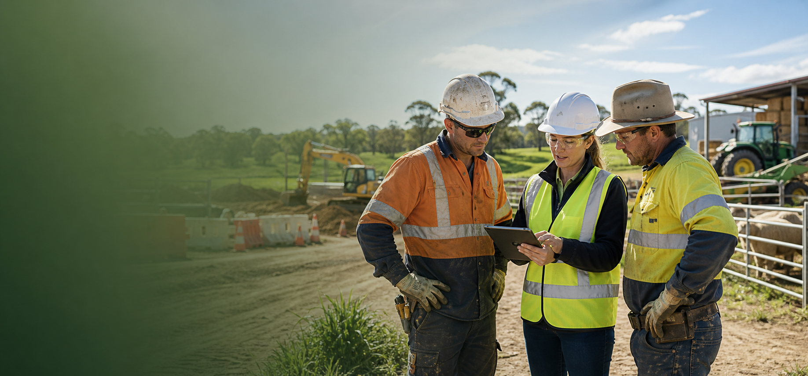

Health, safety and environmental support for real workplaces
Health and safety that people can actually use.
Greenline HSE helps businesses turn duty, risk and documentation into practical systems, stronger assurance and safer decisions on the ground.
01 / About
Senior advice, delivered direct.
Greenline HSE was created by Catriona Monaghan to give businesses practical, people-first safety support shaped by more than twenty years of HSE work across Australia and Ireland.
The approach is grounded in a simple belief: health and safety only works when the system is clear enough for people to use under pressure.
02 / The Gap
The difference between compliance and control.
Many businesses have policies, registers, SWMS and audit folders. The risk appears when those documents stop shaping decisions, conversations and controls at the point of work.
Greenline closes that gap with health and safety systems sized to the business, written in plain English and verified through observation, coaching and practical assurance.
03 / Services
Practical HSE support across the full project lifecycle.
Management Systems
Practical HSE systems, procedures, registers and implementation support.
Risk Assessments
Clear risk processes that identify exposure and define controls that hold up on site.
SOPs
Plain-English operating procedures for routine and high-risk activities.
Audits and Inspections
Independent review of conditions, documentation, contractors and control effectiveness.
Contractor Management
Prequalification, onboarding, monitoring and practical performance improvement.
Incident Investigations
Root-cause investigation focused on learning, correction and prevention.
Training and Inductions
Induction content and toolbox material that lands with supervisors and crews.
Emergency Planning
Response arrangements, drills and reviews that can be executed under pressure.
04 / How We Work
A clear engagement model from first conversation to handover.
First conversation
A complimentary 30 to 45 minute call to understand the need and decide the next step.
Discovery
Review the site, documents, roles, contractor arrangements and how work really happens.
Gap analysis
Prioritised findings across critical risk, quick wins and longer-term improvement work.
Implementation
Build or refine the systems, training and controls needed in sensible stages.
Embed and verify
Confirm controls are understood, used and owned by the team before handover.
05 / Construction & Infrastructure
Construction
Project-ready health and safety support for live sites, contractors, critical risks and assurance.
Explore construction safety06 / Agriculture & Rural Safety
Agriculture
Practical rural safety systems for machinery, vehicles, chemicals, emergency planning and seasonal work.
Explore agriculture safety07 / Contact
Start with a straightforward conversation.
Tell Greenline what you are trying to solve. The first conversation is low-pressure, useful and clear about what the next step could look like.